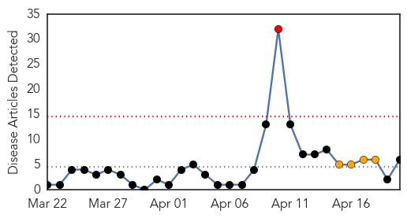
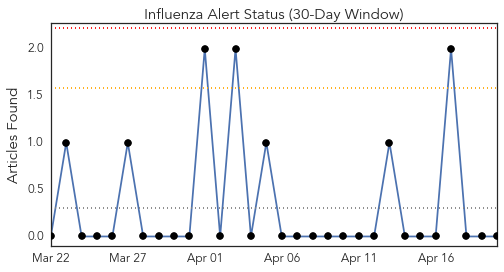
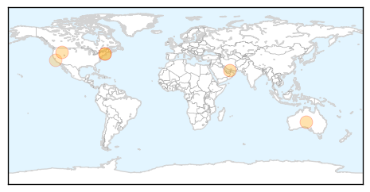
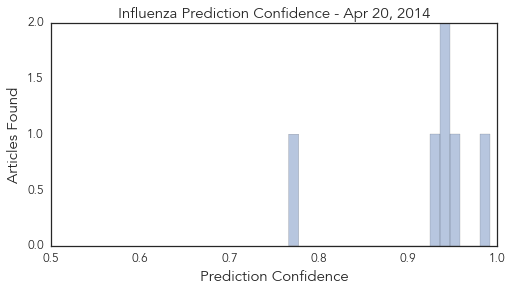
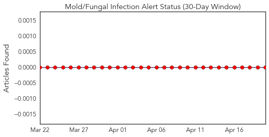
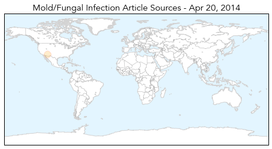
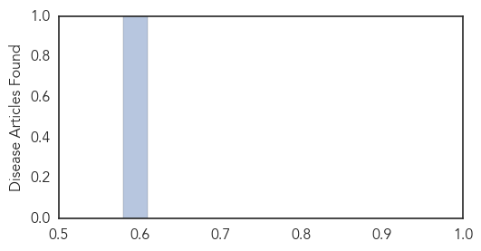

Influenza
30-Day Web Trend
1 alerts, 4 warnings

30-Day Twitter Trend
0 alerts, 0 warnings

Article Locations
Article Confidences
Top Articles:
- 0.992
- 12 new Mers cases in Abu Dhabi
- 0.958
- South Australians urged to get vaccinated after surge in flu cases reported
- 0.945
- Wikipedia traffic may help track flu levels
- 0.936
- Wikipedia traffic may help track flu levels
- 0.926
- The Chosun Ilbo (English Edition): Daily News from Korea
- 0.766
- Santa Cruz confirms H1N1 killed two men
Top Tweets:
-
No tweets found for Apr 20, 2014
Mold/Fungal
30-Day Web Trend
14 alerts, 0 warnings

30-Day Twitter Trend
0 alerts, 0 warnings

Article Locations
Article Confidences
Top Articles:
Top Tweets:
-
No tweets found for Apr 20, 2014